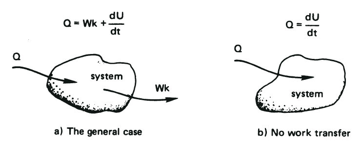
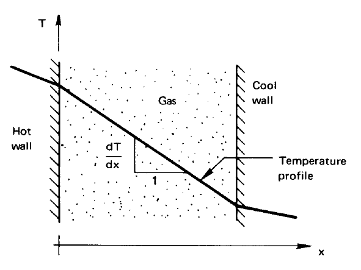
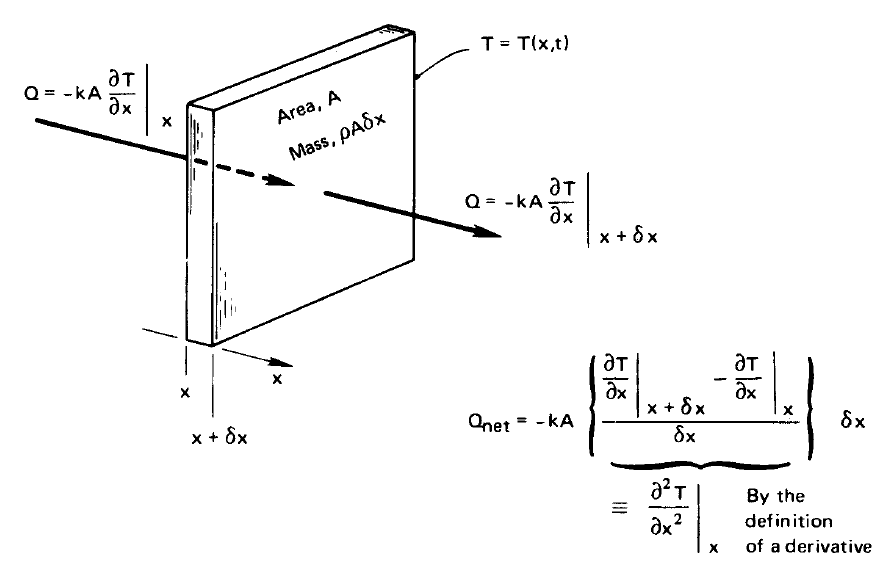
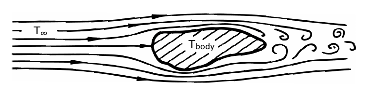
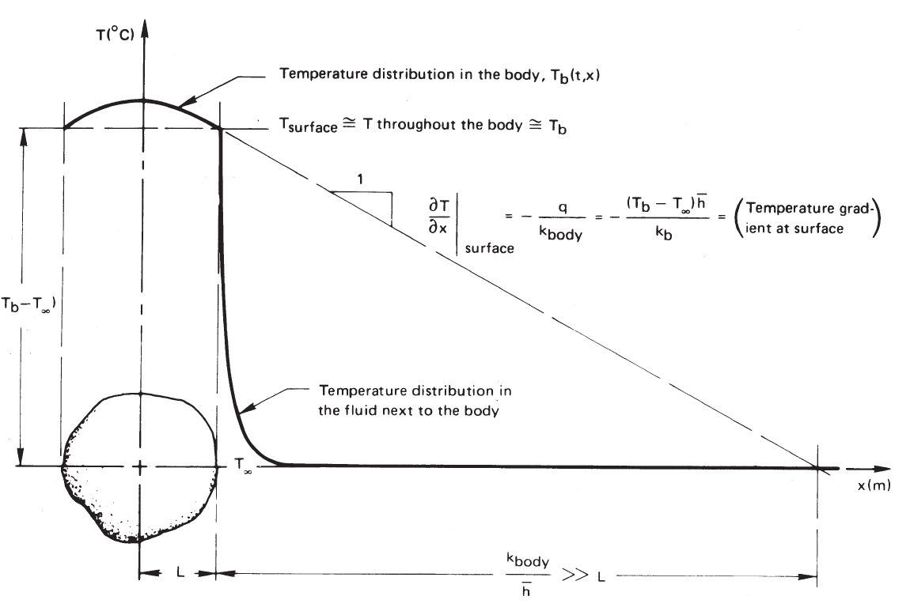

Theory Bridge: Fourier's Law, Heat Equation, And Biot Number¶
This is a short theory bridge, not a full module. Its job is to connect the lumped thermal models from Module 7 to the spatial models needed for the long cylinder experiment.
Read selectively in Lienhard, A Heat Transfer Textbook, Section 1.3, pp. 11-26. Focus on Fourier's Law, the derivation of the heat conduction equation, convection/lumped cooling, dimensional analysis, the Biot number, and Fig. 1.10.
This bridge follows the order of Lienhard Section 1.3:
| Lienhard reading | How to read it |
|---|---|
| pp. 11-13, Fourier's Law | Read carefully. This is the law that turns a temperature gradient into a heat flux. |
| pp. 14-16, thermal conductivity and Example 1.2 | Skim for scale. Notice how \(k\) controls the temperature gradient needed for a given heat flux. |
| pp. 17-18, one-dimensional heat conduction equation | Read slowly. This is the derivation core of the bridge. |
| pp. 19-21, convection and Newton's law of cooling | Read for the meaning of \(h\), the heat transfer coefficient. |
| pp. 21-24, lumped capacity, Fig. 1.10, and Biot number | Read carefully. This explains when a one-temperature model is acceptable. |
| pp. 24-26, thermocouple example | Skim for how Lienhard checks the Biot number assumption in a real calculation. |
Why This Bridge Exists¶
Module 7 used lumped models: one temperature for one object, or two temperatures for two coupled objects. That works when internal temperature gradients are small enough to ignore. The long cylinder is different. Its temperature depends on position as well as time, so we need a model that can describe heat flowing along the rod.
The bridge has three questions:
- What law tells us how heat flows down a temperature gradient?
- How does conservation of energy turn that law into a differential equation?
- When is it reasonable to ignore spatial temperature gradients?
1. Heat And Temperature¶
Heat and temperature are related, but they are not the same quantity. Temperature describes the thermal state of a system. Heat is energy transferred across the system boundary because of a temperature difference.
Analogy: Heat Flow, Water Flow, And Electrical Current¶
One useful analogy is water flowing between reservoirs at different heights. Water height, or equivalently gravitational pressure head, is analogous to temperature: it is a driving potential, not the quantity that flows. A difference in height drives a volume-flow rate of water; a difference in temperature drives a heat-transfer rate. In this course, we will often call \(\dot Q\) the heat current: an energy-current rate measured in watts. The familiar electrical version is Ohm's law: a voltage difference drives an electrical current. In all three systems, a long or narrow path opposes the flow.
| Heat transfer | Gravity-driven water flow | Electrical current |
|---|---|---|
| Temperature difference, \(\Delta T\) | Height difference, \(\Delta h\), or pressure difference, \(\Delta p\) | Voltage difference, \(\Delta V\) |
| Heat current (heat-transfer rate), \(\dot Q\) (W) | Volume-flow rate, \(\dot V\) (m\(^3\)/s) | Current, \(I\) (A) |
| Thermal resistance, \(R_{\mathrm{th}}\) (K/W) | Hydraulic resistance, \(R_{\mathrm{hyd}}\) (Pa s/m\(^3\)) | Electrical resistance, \(R\) (\(\Omega\)) |
| Thermal capacitance, \(mc\) (J/K) | Storage capacity of a tank | Electrical capacitance, \(C\) (F) |
The three steady-flow laws have the same mathematical form:
For steady one-dimensional heat conduction through a uniform material,
For a reservoir-height difference \(\Delta h\), gravity produces a pressure difference \(\Delta p=\rho g\Delta h\). For fully developed laminar flow of an incompressible Newtonian fluid through a straight circular pipe,
Ohm's law is the corresponding electrical relation:
The corresponding storage, or capacitance, laws describe what happens when the driving potential changes in time:
Here \(A_{\mathrm{tank}}\) is the horizontal cross-sectional area of a tank: it determines how much water must enter to raise its water level by a given amount. Similarly, \(mc\) determines how much energy must enter to raise the temperature of a body by a given amount. These forms assume that \(m\), \(c\), \(A_{\mathrm{tank}}\), and \(C\) are constant over the range considered.
Thus \(C_{\mathrm{th}}=mc\) is the thermal analogue of electrical capacitance \(C\). The analogy is useful, but limited: a temperature difference is a thermal potential that drives heat current. Heat is not a substance stored in an object; it is energy transferred across the object boundary because of a temperature difference. The transferred energy changes the object's internal energy \(U\), which is stored in the object. Thermal capacitance relates heat current to the rate of temperature change, \(\dot Q=C_{\mathrm{th}}\,dT/dt\), just as electrical capacitance relates current to the rate of voltage change. A larger thermal mass requires more transferred energy to produce a given temperature change.

Lienhard and Lienhard, Fig. 1.1, textbook p. 7: First-Law energy balance for a closed system.
The First Law of Thermodynamics is conservation of energy. With Lienhard's sign convention, the rate at which heat enters a closed system equals the rate at which the system does compression work plus the rate at which its internal energy increases.
For a closed system with compression work, Lienhard Eq. (1.2a) is
For the incompressible solids and liquids used in this course, the volume-work term is normally absent and the specific heats at constant pressure and volume may be represented by \(c\). Equation (1.3) then becomes
This equation does not say that heat and temperature are identical. It says that a net heat-transfer rate changes the internal energy and therefore changes temperature at a rate controlled by the thermal mass \(mc\).
2. Heat Conduction And Fourier's Law¶
Use Lienhard Section 1.3, "Modes of heat transfer," pp. 11-27, as the source for this section.
This is the first major idea in the pp. 11-26 reading span.
| Read this in Lienhard | What to take from it |
|---|---|
| Section 1.3, p. 11, line beginning "Fourier's law," through Eq. (1.8) | \(q\) is heat flux, \(k\) is thermal conductivity, and the temperature gradient drives conduction. |
| Section 1.3, p. 11, line beginning "The heat flux is a vector quantity" | The minus sign is a direction statement: heat flows from higher temperature to lower temperature. |
| Section 1.3, p. 13, line beginning "The direction of heat flow," through Eq. (1.9) | In one-dimensional steady conduction, Lienhard often rewrites the law with positive \(\Delta T\) and positive \(q\). |
| Section 1.3, p. 13, line beginning "Notice that," through Eq. (1.10) | For the same heat flux, a material with larger \(k\) needs a smaller temperature gradient. |
Fourier's Law says that heat flows from hot regions toward cold regions. In one dimension,
Here \(q_x\) is heat flux in W/m\(^2\), \(k\) is thermal conductivity in W/(m K), and \(\partial T/\partial x\) is the temperature gradient. The minus sign matters: heat flows in the direction of decreasing temperature.
For a rod with cross-sectional area \(A\), the heat-flow rate is
For this course, the key idea is not the symbol manipulation. The key idea is that a temperature gradient causes a heat current.

Lienhard and Lienhard, Fig. 1.5, textbook p. 14: a temperature gradient and the corresponding direction of conductive heat flow.
In Lienhard's one-dimensional notation, Fourier's Law is
When you read Lienhard, notice the small change in notation. Lienhard first writes \(dT/dx\), because he is describing one-dimensional conduction. We write \(\partial T/\partial x\) here because the long-cylinder experiment will have a temperature \(T(x,t)\) that can depend on both position and time.
3. One-Dimensional Conduction: From Energy Balance To The Heat Equation¶
Use Lienhard Section 1.3, pp. 17-18 (PDF pp. 31-32), beginning with "One-dimensional heat conduction equation," and Fig. 1.8. Read this part slowly; it is the bridge from a heat-flow law to a temperature equation.
This is the derivation core of the bridge.

Lienhard and Lienhard, Fig. 1.8, textbook p. 18: Fourier conduction into and out of a differential element.
For the differential element, the net conductive heat loss is
The corresponding internal-energy change is
Combining them gives
Your goal is to understand how Lienhard gets from this physical picture:
small slice of material + Fourier's Law + conservation of energy
to this one-dimensional heat equation:
Follow Lienhard's derivation in this order:
| Step | Lienhard reference | What the step does |
|---|---|---|
| 1 | Section 1.3, p. 17, line beginning "One-dimensional heat conduction equation" | Names the problem: Fourier's law contains both \(T\) and \(q\), but we want an equation for \(T(x,t)\). |
| 2 | Section 1.3, p. 17, line beginning "Now let us eliminate q," plus Fig. 1.8 and Eq. (1.12) | Applies Fourier's Law at the left and right faces of a thin slice. The difference between the two fluxes produces a second derivative, \(\partial^2T/\partial x^2\). |
| 3 | Section 1.3, p. 17, line beginning "To eliminate the heat loss," through Eq. (1.13) | Uses the First Law for the slice: net heat loss changes the slice's internal energy. |
| 4 | Section 1.3, p. 17, line beginning "Combining eqns." through Eq. (1.14) | Combines the flux difference with energy storage to eliminate \(q\). This gives the one-dimensional heat equation. |
| 5 | Section 1.3, p. 18, line beginning "This result is the one-dimensional heat conduction equation" | Explains why the result matters: we can solve for the temperature distribution \(T(x,t)\). |
| 6 | Section 1.3, p. 18, line beginning "This is the thermal diffusivity" | Introduces thermal diffusivity, \(\alpha=k/(\rho c)\), as the material property controlling transient spreading of heat. |
Use these checkpoints while reading pp. 17-18:
- In Eq. (1.12), identify the heat conducted out of the right face and the heat conducted in through the left face.
- Explain why subtracting those two nearby fluxes produces \(\partial^2T/\partial x^2\), not just \(\partial T/\partial x\).
- In Eq. (1.13), identify the energy-storage term for the slice.
- In Eq. (1.14), point to the moment when \(q\) disappears and the unknown becomes \(T(x,t)\).
- On p. 18, explain in words what thermal diffusivity \(\alpha\) measures.
Start with conservation of energy for a small piece of material:
rate of thermal energy storage = heat flowing in - heat flowing out + heat generated
For a solid with density \(\rho\), heat capacity \(c_p\), and constant thermal conductivity \(k\), this becomes
This is the same physical idea as Lienhard's Eq. (1.14), but written in a more general three-dimensional form and with a possible internal heat-generation term, \(\dot q'''\). Lienhard's Chapter 1 derivation is one-dimensional and has no internal heat generation.
If there is no internal heat generation, \(\dot q'''=0\), then
The parameter \(\alpha\) is the thermal diffusivity. It tells how quickly a temperature disturbance spreads through the material.
For a long, thin rod whose temperature varies mostly along its length, this becomes the one-dimensional heat equation:
The later rod module will add side heat loss to the room, because the cylinder is not perfectly insulated.
4. Heat Convection And Newton's Law Of Cooling¶

Lienhard and Lienhard, Fig. 1.9, textbook p. 19: fluid flow carries heat away from a warmer body.
Newton proposed that the cooling rate should be proportional to the difference between the body temperature and the incoming-fluid temperature:
Using the First Law gives
Defining the positive outward heat flux \(q=\dot Q_{\mathrm{out}}/A\) and the heat-transfer coefficient \(h\) gives Newton's law of cooling:
Here \(h\) has units W/(m\(^2\) K). Unlike \(k\), which is a material property, \(h\) depends on the fluid, flow, geometry, and often temperature.
5. Lumped Cooling And The Biot Number¶
Use Lienhard Section 1.3, pp. 11-26, as the source for this section. Read pp. 19-21 to understand Newton's law of cooling and the heat transfer coefficient \(h\). Then read pp. 21-24 carefully for the lumped-capacity model, Fig. 1.10, and the Biot number. Skim pp. 24-26 to see how the thermocouple example checks whether \(\mathrm{Bi}\ll1\) is actually valid.
Before assuming that a body has one uniform temperature, ask how heat moves through it. Heat must first conduct through the solid to its surface and then transfer from the surface to the surroundings by convection. These two stages have approximate thermal resistances
Thermal resistance relates a temperature difference to a total heat-transfer rate:
Therefore, both \(R_{\mathrm{cond}}\) and \(R_{\mathrm{conv}}\) have units of kelvin per watt, K/W. A resistance quoted per unit area, \(R''=AR\), instead has units of m\(^2\) K/W.
Using the same representative area for this scaling argument, their ratio is
This ratio compares resistance to heat flow inside the solid with resistance to heat transfer from its surface to the surroundings. We now derive the same dimensionless combination from the heat-transport equations.
Nondimensional Derivation¶
With no internal heat generation, the temperature inside the solid obeys
At a surface cooled by convection, Fourier's Law inside the solid must match Newton's law of cooling at the surface:
where \(n\) is the outward-normal direction. Define dimensionless temperature, position, and time by
Here \(\mathrm{Fo}\) is the Fourier number and \(\alpha=k/(\rho c)\) is the thermal diffusivity. In these variables, the heat equation becomes
and the convective boundary condition becomes
The Biot number therefore appears naturally when the convective boundary condition is made dimensionless. It is not an additional empirical correction. It is the parameter that determines how strongly surface cooling competes with internal conduction.
Here \(h\) is the convection coefficient to the surroundings, \(k\) is the thermal conductivity inside the solid, and \(L_c\) is a characteristic length, often \(V/A_s\), the volume divided by the surface area. The tricky bit is that there can be more than one characteristic length (or thermal conductivity constant) in the problem. How do you choose which one to use? For a long, thin cylinder, the Bi number for the radius, \(r\), can be small, but the Biot number of the length, \(L\), can be large, e.g. \(r\ll L\). In this case, instead of having a differential equation that depends on both radius and length, you can reduce it to a 1D problem by ignoring any radial dependence of the temperature.
Interpretation:
- Small \(\mathrm{Bi}\): internal conduction offers much less resistance than convection. Internal temperature gradients are small, so a lumped model may be reasonable.
- Large \(\mathrm{Bi}\): internal conduction offers appreciable resistance. Internal temperature gradients matter, so a spatial model is needed.
Only after establishing that \(\mathrm{Bi}\) is small do we approximate the body by one temperature. Applying the First Law, introduced in Section 1, and using Newton's law of cooling then gives
Therefore,
whose general solution is
With \(T(0)=T_i\), define \(\tau=\rho cV/(hA)\). The normalized cooling curve is

Lienhard and Lienhard, Fig. 1.10, textbook p. 23: when internal conduction is fast compared with surface cooling, the body remains nearly isothermal.
Figure 1.10 is the picture to keep in mind: dimensional analysis is not extra decoration. It tells us which effects are small enough to neglect and which effects must be kept in the model.
What To Prepare¶
Before class, write short answers to these questions. Use Lienhard Section 1.3, pp. 11-26. Give most of your time to questions 3-9, which follow the main arc from Fourier's Law to the heat equation to the Biot number.
- In Fourier's Law, why is there a minus sign?
- What are the units of \(q_x\), \(\dot Q_x\), and \(k\)?
- On pp. 14-16, why does a larger \(k\) lead to a smaller temperature gradient for the same heat flux?
- In Lienhard Eq. (1.12), what physical quantity is being calculated?
- In Lienhard Eq. (1.13), what physical quantity is being stored?
- Why does combining Eq. (1.12) and Eq. (1.13) produce an equation for \(T(x,t)\) instead of an equation for \(q\)?
- What physical property does thermal diffusivity \(\alpha\) describe?
- How does the ratio of conduction resistance to convection resistance produce the Biot number, and why does a small Biot number support a lumped-temperature model?
- In Lienhard's thermocouple example, why does checking \(\mathrm{Bi}\) matter?
- Why might the long metal cylinder require a one-dimensional or two-dimensional model instead of a lumped model?
How This Work Is Assessed¶
This bridge supports the later individual A4 and A5 derivations and the C4
oral discussion. It does not create an additional submission. Keep your
answers above and a dimensional equation sheet in
docs/theory/theory_bridge_chapter_1_notes.md so you can reuse the reasoning
without rewriting it for an extra grade.
The planned outside-class time is already counted in the Module 7 budget:
| Work | Planned time |
|---|---|
| Read this bridge alongside the selected Chapter 1 pages | 60 minutes |
| Work through Eqs. (1.12)-(1.14) and the Biot-number scaling | 45 minutes |
| Answer the preparation questions and check units | 30 minutes |
| Total theory-bridge preparation | 2 hours 15 minutes |
Do not add this time again when reading the Module 7 workload table. Bring specific questions to class if the derivations remain unclear after the planned time.
Core Equations And Explanations To Master¶
By the time of A4 and the C5 oral check, you should be able to do the following without relying on AI-generated prose:
- state Fourier's law and explain its sign and units,
- apply conservation of energy to a differential slice and obtain the heat equation,
- state Newton's law of cooling and explain the meaning and units of (h),
- combine axial conduction and side cooling to obtain the stationary fin equation,
- solve that equation with a prescribed base temperature and insulated-tip boundary condition,
- obtain the semi-infinite exponential solution as a limit of the finite solution, and
- derive and interpret the transverse Biot number as the test for neglecting radial temperature variation.
The goal is not memorization of an isolated formula. You should be able to identify the physical balance, state the boundary conditions, carry the units, and explain what approximation each solution uses.
Two Different Approximation Questions¶
The words long and thin describe two independent approximations. We will not hide them inside one general statement that the rod is "approximately one-dimensional."
- Length: Can the physical end at \(x=L\) be ignored over the part of the rod we measure? We will answer this first by solving the finite-length one-dimensional boundary-value problem analytically and comparing it with the semi-infinite solution.
- Radius: Can temperature variation across a cross section be ignored? For a circular rod, we will use
\(\displaystyle \mathrm{Bi}_{\perp}=\frac{h(A/P)}{k}=\frac{hR}{2k}. \)
We will first work in the \(\mathrm{Bi}_{\perp}\ll1\) regime, where a one-dimensional model is justified. Later we will retain radial variation and study the large-Biot-number regime numerically.
The next full theory treatment uses Lienhard Section 4.5 to carry out the finite-length solution and the transverse-Biot-number check. Each topic will combine an instructor lecture with guided self-study from the textbook. The accompanying Fin Design: From A Finite Rod To An Infinite Rod page develops every equation from (4.27) through (4.51).